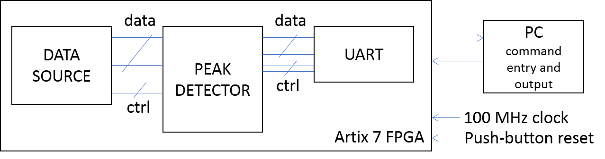

|
|
|
The task of the Assignment is to design and implement a peak detection system with modules, including the peak detector, data source and communication links based on UART. With an external computer, multiple commands can be sent through the UART link to control the peak detector to implement the required functions. Figure 2.1 provides the overview of the whole system.

On the PC, the commands typed into the keyboard and the output received by the PC is captured and displayed in a VT100 terminal emulator, which is similar to the command terminal in Unix or DOS. The utility we will use that emulates a VT100 terminal is called PuTTY. Configuration of PuTTY is covered later.
All keystrokes that are typed in the PuTTY terminal are sent to the board through UART and captured by the Receiver (Rx for short) in the UART. The recevived commands need to be verified,and then communicated to the peak detector module. All outputs from the detector system are communicated to the PC terminal via the Transmitter (Tx for short) in the UART.
All of the logic in the design including the UART and data generator will be implemented in an FPGA device from Xilinx called Artix 7. This device sits on a full development board which provides a 12 MHz clock as well as various I/O and other peripheral and control circuitry. The UART link is provided through a mini USB port and implements the RS232 protocol which is purely serial. The input and output serial lines are available at two I/O pins in the FPGA device. Details of the RS232 protocol are provided later in the document, and the VHDL code for both the Rx and Tx are provided.
The data generator, for which the code is also provided, has access to 500 bytes of data, and will provide a byte at a time upon request, with requests governed by a 2-phase handshaking protocol. Details will again be provided later in the document, but essentially, the data generator has an input control line and an output control line. When it sees a transition on the input control line (i.e. a '0' to '1' or '1' to '0' transition), it will provide a new byte on 8 parallel data lines, and change the value of its output control line; i.e. if it was '0' previously, it will transition to '1', and vice-versa. This transition on its output control line is a signal to the data acquisition module that data is valid. After the data has been latched, the consumer should effect a transition on the input to the data generator to request a new byte. Once all 500 bytes have been provided, the data generator will revert to the first byte in the sequence and keep cycling through the sequence.
The task of the peak detector is to process a number of words as typed in by the user in the terminal, and return the peak byte along with the three bytes that precede and follow it in the sequence, with the value interpreted according to unsigned or signed formats based on your group number. It should also return the index of the peak byte in the sequence. If multiple peaks are detected in a single data sequence, the first is to be retained. The design is to be implemented on the CMOD A7board with a Artix 7 device running on a 100 MHz system clock (the 100 MHz clock is generated from the 12 MHz on-board clock by using a clock-conditioning IP block). It should use the 3 supplied modules with no modifications: a Receiver and Transmitter that implement the RS232 protocol, and a Data Generator that supplies a byte at a time under the control of a 2-phase handshaking protocol.
The functionality described above is described in more detail in the next few sections.
Processing of a data sequence is initiated by the start command "aNNN" or "ANNN" typed in to the terminal, where "NNN" are 3 decimal digits, ranging from "000" to "999". This number is simply the number of words to be processed. For example, "a500" means process 500 bytes. Hence the maximum number of words that can be processed is 999. Termination of a character string by hitting the <ENTER> key is not required. If the letter "A" or "a" is followed by 3 decimal digits in sequence, regardless of what keystrokes preceded "A" or "a", the command is valid. Examples of a valid start string are "A500", "a067" and "hjhgjga945". The last is valid as the last four 4 characters define a valid start command. However the string "A56k7" is not a valid command, as 3 decimal digits do not follow the character "A" in an uninterrupted sequence. For the same reason, neither is "a55".
Upon detection of a valid start command, the number of bytes specified should be processed without interruption. Each byte should be printed in hexadecimal format. The start command is valid at any point as long as data processing is not taking place. The behaviour when a user command is typed in the middle of processing a sequence is undefined.
Upon completion of processing of a data sequence, the following commands are valid:
These commands should not result in any action if a data sequence has not been processed prior to receiving them. The commands should always relate to the data sequence immediately preceding them, should multiple data sequences have been processed with multiple start commands.
Finally, push button BTN1 on the board is to function as a synchronous reset. After the design has been downloaded to the FPGA, the reset button may be pressed to initialise the system. Afterwards, the system should function normally without the need to reset it, for example after every run. At any point if the reset button is pressed, the system should halt any current data processing and settle into the initial state.
The commands are summarised in Table 2.1.
| Command | Description |
|---|---|
| ANNN or aNNN where NNN are 3 decimal digits. | Start command to process NNN bytes of data. Print each byte processed in the terminal window in hexadecimal format, separated by spaces. For example bytes "11111111" and "10101001" in sequence are to be printed as "FF A9". |
| L or l | Print the 3 bytes preceding the peak in the order they were received, the peak byte itself and the 3 bytes following the peak in the order received. They should be printed in hexadecimal format and separated by spaces. For example, the output of typing this command after processing a data sequence may be "09 FA A0 FD BC 10 DE". |
| P or p | Print the peak byte itself, followed by a space and the peak index in decimal format. For example, the output of typing this command after processing a data sequence may be "FD 197". |
| Push button BTN1 (reset) | Initialise the system when pressed at any point, including in the middle of a run. This is a synchronous reset and a reset command should not be required for the system to function normally, except after first loading the design. |
Every keystroke typed into the terminal has to be echoed as it is typed.
After a valid command, the output should always start on a new line. In the VT100 terminal, a new line that starts at the first character position on the left hand side is achieved by a sequence of two bytes, a line feed "\n" and a carriage return "\r". The full ASCII code is described in Section 2.4.
|
|
|